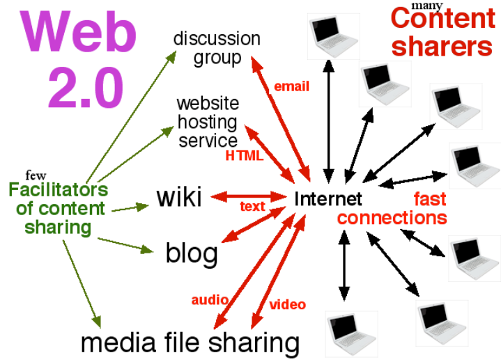

<!DOCTYPE html>
<html lang="en"></html>
<head>
    <meta charset="UTF-8">
    <meta name="viewport" content="width=device-width, initial-scale=1.0">
    <nav>
        <a href="index.html">Home</a>&#65372;
        <a href="www.html">World Wide Web</a>&#65372;
        <a href="tcpip.html">TCP/IP</a>&#65372;
        <a href="http.html">HTTP</a>&#65372;
        <a href="dns.html">DNS</a>&#65372;
        <a href="html.html">HTML</a>&#65372;
        <a href="webserver.html">Web Server</a>&#65372;
        <a href="webbrowser.html">Web Browser</a>&#65372;
        <a href="url.html">Uniform Resource Locator</a>&#65372;
        <a href="intranet.html">Intranet</a>&#65372;
        <a href="extranet.html">Extranet</a>&#65372;
        <a href="ftp.html">File Transfer Protocol</a>&#65372;
        <a href="web1.0.html">Web 1.0</a>&#65372;
        <a href="web2.0.html">Web 2.0</a>&#65372;
        <a href="web3.0.html">Web 3.0</a>&#65372;
        <a href="web4.0.html">Web 4.0</a>&#65372;

    </nav>
    <title>Terminology: Web 2.0</title>
     <style>
    body {
            
            background-color: #fff5f7;
            margin: 0;
            padding: 20px;
        }
        h1{
            color: #c2185b;
            font-size: 30px;
            text-transform: uppercase;
        }
        h2{
            color: #f48fb1;
            font-size: 22px;
            text-transform: uppercase;
            text-decoration: underline;

        }
        p{
            color: #333;
            font-size: 18px;
            line-height: 1.6;
            background-color: beige;
            font-style: italic;
            padding: 10px;
        }
        ul{
            color: #333;
            font-size: 18px;
            line-height: 1.6;
            font-style: italic;
            padding: 10px;
        }
</style>
</head>
<body>
    <h1>Web 2.0</h1>
    <p>
        Web 2.0 refers to the second generation of the World Wide Web, which emphasizes user-generated content, usability, and interoperability. It is characterized by the shift from static web pages to dynamic and interactive web applications. Web 2.0 technologies include social media platforms, blogs, wikis, and other collaborative tools that allow users to create and share content easily.
    </p>
    <p>
        The term "Web 2.0" was popularized in the early 2000s to describe the changing landscape of the internet, where users became active participants rather than passive consumers of information. Web 2.0 has had a significant impact on how people communicate, collaborate, and access information online.
    </p>
    <h2>Key Features of Web 2.0</h2>
    <ul>
        <li><strong>User-Generated Content:</strong> Web 2.0 platforms allow users to create and share their own content, such as blog posts, videos, and social media updates.</li>
        <li><strong>Interactivity:</strong> Web 2.0 applications are designed to be interactive and responsive, providing a more engaging user experience.</li>
        <li><strong>Collaboration:</strong> Web 2.0 tools enable users to collaborate on projects, share ideas, and work together in real-time.</li>
        <li><strong>Rich User Experience:</strong> Web 2.0 incorporates multimedia elements such as images, videos, and audio to enhance the user experience.</li>
    </ul>
    
    <h2>Impact of Web 2.0</h2>
    <p>
        Web 2.0 has transformed the way people interact with the internet and has led to the rise of social media platforms like Facebook, Twitter, and Instagram. It has also enabled the growth of online communities and collaborative projects such as Wikipedia. The democratization of content creation has empowered individuals to share their voices and connect with others globally.
    </p>